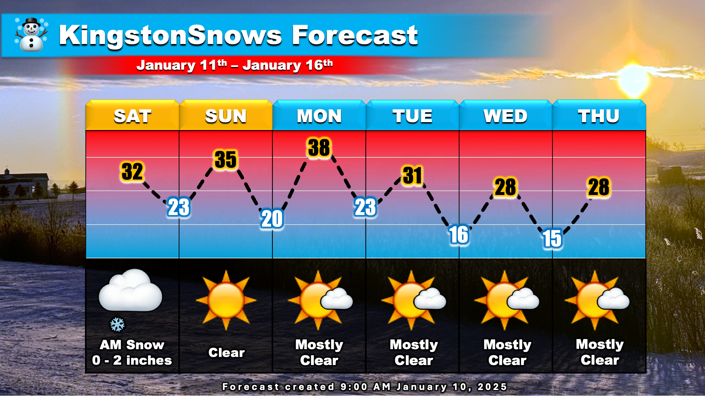
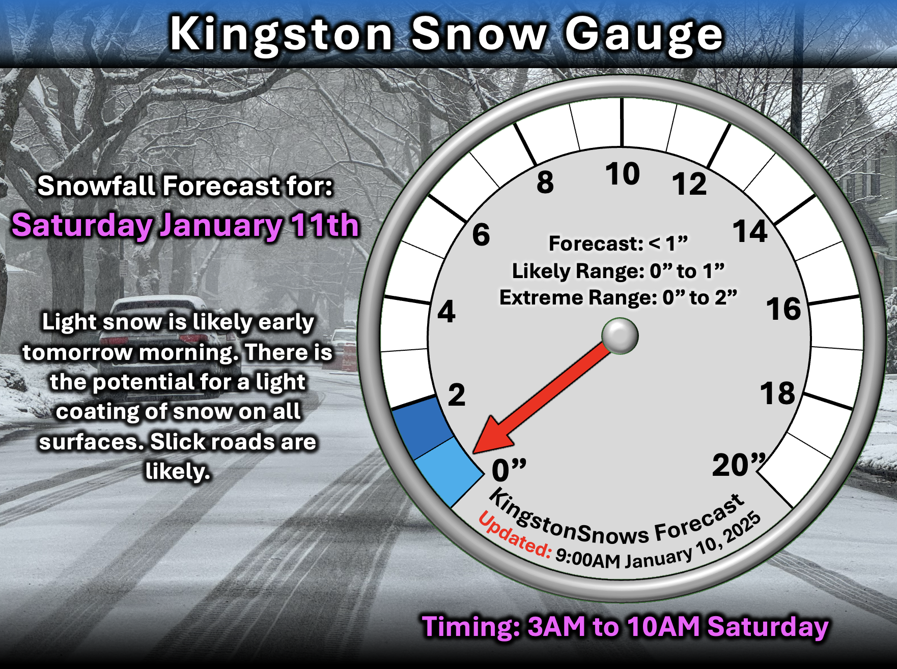
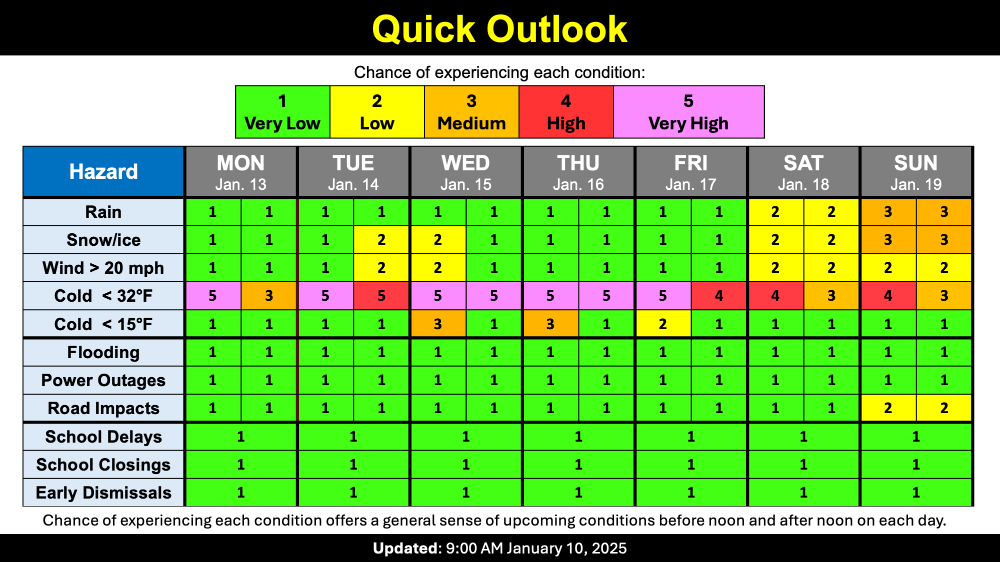

Light Snow Tomorrow
School Forecast
through Friday January 17th
Last updated: 10:00AM Friday January 10th, 2025
| 0% (Nope) |
|---|
| 0% (Nope) |
|---|
| 0% (Nope) |
|---|
___________________
10:00AM Friday:
It's been a chilly, but calm start to January. The snow mentioned in this week's earlier update is still expected to fall tomorrow. But other than some light snow tomorrow morning, the calm weather should persist through the next week.

The Forecast:
A storm currently producing snow from Georgia to Michigan will approach us tonight. Most of the snow associated with this storm will miss us, however, we'll likely see a little bit. Snow is likely to fall Saturday morning between 3AM and 10AM. Any snow accumulation will likely remain under 1 inch in the Kingston area. Once the storm departs calm, mostly clear weather is likely through most of next week. There's a low chance we could see some flurries Tuesday or Wednesday, but other than that, it should be dry through next Friday.

The Impacts:
Overall impacts from tomorrow's snow will be minor. A dusting or light coating of snow is likely on all surfaces, including roads. Slick roads are likely tomorrow morning. School impacts are not expected over the next week.
Next Update:
Next Week
-Ethan 🙂

KingstonSnows | Kingston, New York
Website built by Ethan Burwell